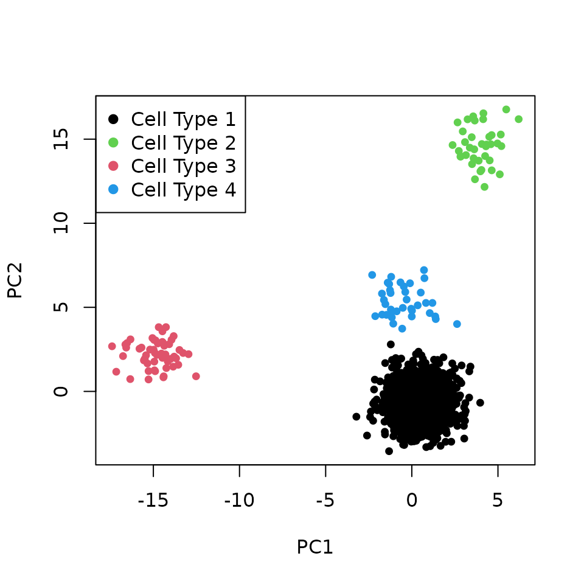

toy_example.Rmd
library(Canek)
# Functions
## Function to plot the pca coordinates
plotPCA <- function(pcaData = NULL, label = NULL, legPosition = "topleft"){
col <- as.integer(label)
plot(x = pcaData[,"PC1"], y = pcaData[,"PC2"],
col = as.integer(label), cex = 0.75, pch = 19,
xlab = "PC1", ylab = "PC2")
legend(legPosition, pch = 19,
legend = levels(label),
col = unique(as.integer(label)))
}On this toy example we use the two simulated batches included in the SimBatches data from Canek’s package. SimBatches is a list containing:
batches: Simulated scRNA-seq datasets with genes (rows) and cells (columns). Simulations were performed using Splatter.cell_type: a factor containing the celltype labels of the batches
lsData <- list(B1 = SimBatches$batches[[1]], B2 = SimBatches$batches[[2]])
batch <- factor(c(rep("Batch-1", ncol(lsData[[1]])),
rep("Batch-2", ncol(lsData[[2]]))))
celltype <- SimBatches$cell_types
table(batch)
#> batch
#> Batch-1 Batch-2
#> 631 948
table(celltype)
#> celltype
#> Cell Type 1 Cell Type 2 Cell Type 3 Cell Type 4
#> 1451 53 38 37We perform the Principal Component Analysys (PCA) of the joined datasets and scatter plot the first two PCs. The batch-effect causes cells to group by batch.
plotPCA(pcaData = pcaData, label = batch, legPosition = "bottomleft")
plotPCA(pcaData = pcaData, label = celltype, legPosition = "bottomleft")We correct the toy batches using the function RunCanek. This function accepts:
On this example we use the list of matrices created before.
data <- RunCanek(lsData)We perform PCA of the corrected datasets and plot the first two PCs. After correction, the cells group by their corresponding cell type.
plotPCA(pcaData = pcaData, label = batch, legPosition = "topleft")
plotPCA(pcaData = pcaData, label = celltype, legPosition = "topleft")
sessionInfo()
#> R version 4.1.1 (2021-08-10)
#> Platform: x86_64-pc-linux-gnu (64-bit)
#> Running under: Ubuntu 20.04.3 LTS
#>
#> Matrix products: default
#> BLAS: /usr/lib/x86_64-linux-gnu/blas/libblas.so.3.9.0
#> LAPACK: /usr/lib/x86_64-linux-gnu/lapack/liblapack.so.3.9.0
#>
#> locale:
#> [1] LC_CTYPE=C.UTF-8 LC_NUMERIC=C LC_TIME=C.UTF-8
#> [4] LC_COLLATE=C.UTF-8 LC_MONETARY=C.UTF-8 LC_MESSAGES=C.UTF-8
#> [7] LC_PAPER=C.UTF-8 LC_NAME=C LC_ADDRESS=C
#> [10] LC_TELEPHONE=C LC_MEASUREMENT=C.UTF-8 LC_IDENTIFICATION=C
#>
#> attached base packages:
#> [1] stats graphics grDevices utils datasets methods base
#>
#> other attached packages:
#> [1] Canek_0.1.7
#>
#> loaded via a namespace (and not attached):
#> [1] modeltools_0.2-23 xfun_0.26 bslib_0.3.0
#> [4] kernlab_0.9-29 lattice_0.20-45 htmltools_0.5.2
#> [7] stats4_4.1.1 yaml_2.2.1 rlang_0.4.11
#> [10] pkgdown_1.6.1 jquerylib_0.1.4 prabclus_2.3-2
#> [13] BiocParallel_1.26.2 BiocGenerics_0.38.0 fpc_2.2-9
#> [16] matrixStats_0.61.0 robustbase_0.93-9 stringr_1.4.0
#> [19] ragg_1.1.3 memoise_2.0.0 evaluate_0.14
#> [22] knitr_1.36 fastmap_1.1.0 irlba_2.3.3
#> [25] flexmix_2.3-17 parallel_4.1.1 numbers_0.8-2
#> [28] class_7.3-19 DEoptimR_1.0-9 highr_0.9
#> [31] BiocNeighbors_1.10.0 Rcpp_1.0.7 diptest_0.76-0
#> [34] cachem_1.0.6 S4Vectors_0.30.1 desc_1.4.0
#> [37] jsonlite_1.7.2 FNN_1.1.3 systemfonts_1.0.2
#> [40] fs_1.5.0 textshaping_0.3.5 digest_0.6.28
#> [43] stringi_1.7.4 bluster_1.2.1 grid_4.1.1
#> [46] rprojroot_2.0.2 tools_4.1.1 magrittr_2.0.1
#> [49] sass_0.4.0 cluster_2.1.2 crayon_1.4.1
#> [52] pkgconfig_2.0.3 MASS_7.3-54 Matrix_1.3-4
#> [55] rmarkdown_2.11 R6_2.5.1 mclust_5.4.7
#> [58] nnet_7.3-16 igraph_1.2.6 compiler_4.1.1